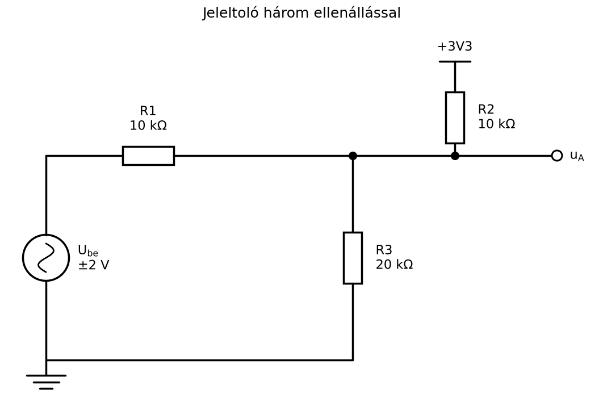
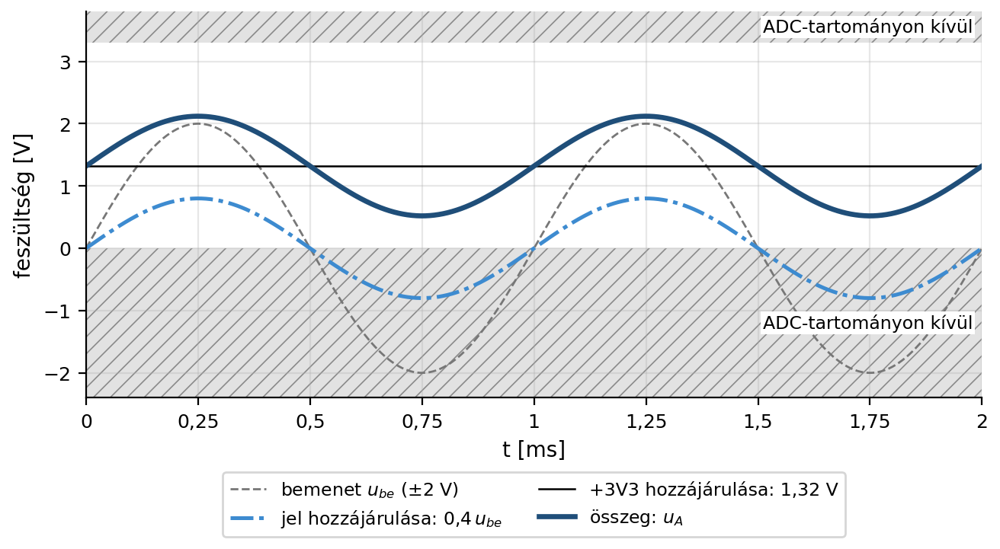

Ennek az alfejezetnek a végére ki tudsz számolni egy több forrású lineáris hálózat bármely feszültségét vagy áramát a források hatásainak összegeként, helyesen „kapcsolsz ki” forrást, átalakítasz feszültségforrást áramforrássá (és vissza), és tudni fogod, miért nem alkalmazható a módszer a teljesítményre és a nemlineáris elemekre.
A szenzormodulra egy olyan érzékelőt kötnél, amelynek kimenete 0 V körül ±2 V-ot leng. A mikrovezérlő analóg bemenete viszont csak a 0 és 3,3 V közötti tartományt látja; a negatív félperiódus egyszerűen elveszne, sőt a bemenet védődiódáit is nyitná. A jelet tehát összenyomni és felfelé tolni kell. Három ellenállás elég hozzá: a jel az -en, a +3V3 sín az -n keresztül egy közös A csomópontra megy, onnan a földre.

Két forrás, egy csomópont. Hogyan számoljuk ki? Egyik lehetőség az egyenletrendszer (erre a A csomóponti potenciálok módszere és az MNA-megoldó ad általános receptet). Most egy olyan utat járunk be, amely megmutatja, melyik forrás mennyit tesz hozzá az eredményhez.
Képzeld el, hogy a két forrás egymástól függetlenül „nyomja” az A csomópontot. Ha a jelet nullára állítod, a +3V3 sín egyedül beállít rajta egy állandó feszültséget. Ha a sínt kapcsolod ki, a jel egyedül egy kicsinyített másolatát jeleníti meg ott. A meglepő, de lineáris hálózatban pontosan igaz állítás: a két hatás egyszerűen összeadódik.

Az analógia korlátja: ez nem általános természettörvény. Ha az ellenállások egyikét diódára cseréled, a hatások már nem adhatók össze, mert a dióda viselkedése attól függ, mekkora a teljes feszültség rajta.
Definíció. Egy hálózat lineáris, ha a források (a „gerjesztés”) és bármely feszültség vagy áram (a „válasz”) kapcsolata kielégíti a következő két tulajdonságot:
Ellenállásokból és független forrásokból álló hálózat mindig lineáris, mert a Kirchhoff-törvények és az Ohm-törvény elsőfokú egyenletek. Ezért bármely válasz a források súlyozott összege:
Itt és csak az ellenállásoktól függő állandók (a mértékegység nélküli, ha feszültség; az ellenállás mértékegységű), a forrásoktól nem.
Definíció. A szuperpozíció (superposition) elve: lineáris hálózatban egy válasz egyenlő azoknak a válaszoknak az előjeles összegével, amelyeket az egyes független források külön-külön, a többi kikapcsolása mellett hoznak létre.
A vezérelt forrást (értéke a hálózat egy másik feszültségétől vagy áramától függ, mint az erősítőmodellekben) nem szabad kikapcsolni: az a hálózat része, nem külső gerjesztés.
Az Valós források, Thévenin és Norton szerint egy feszültségforrás és vele soros ugyanaz kifelé, mint egy áramforrás párhuzamos -rel. Ezt bármely ilyen párra szabadon alkalmazhatjuk egy nagyobb hálózat belsejében is (a kivezetéseken kívüli elemekre nézve). Az áramforrás nyila a feszültségforrás + kivezetése felé mutat. Figyelem: az átalakított elemek saját árama és teljesítménye nem marad meg.
Ha több forrásos ág fut ugyanabba a csomópontba, mindet árammá alakítva az áramforrások összeadódnak, az ellenállások pedig párhuzamosan kapcsolódnak. Egy csomópontra tehát
ahol a forrás nélküli ágban . Ez a Millman-tétel: a csomópont feszültsége az ágak forrásfeszültségeinek vezetésekkel súlyozott átlaga. (A vezetés , egysége a siemens.)
A jeleltoló két forrása más jellegű: az egyik állandó, a másik időben változik. A szuperpozíció miatt külön tárgyalhatók: az egyenáramú (DC) munkapont és a rá ülő jel. Ez lesz az alapja az erősítők kisjelű elemzésének az Erősítő alapkapcsolások és a kisjelű modell alfejezetben.
Ugyanígy a kis hibaforrások (egy bemenet szivárgóárama, egy erősítő ofszetfeszültsége, vagyis a bemenetén látszó apró egyenfeszültségű hiba) a hasznos jeltől függetlenül, egyenként számolhatók és összeadhatók. Egy áramforrásként modellezett szivárgóáram egy Thévenin-ellenállású csomóponton hibát okoz.
Továbbvitt eredmény. A szuperpozíció (egyenszint + jel, illetve hibák előjeles összegzése) az Erősítő alapkapcsolások és a kisjelű modell, a Valós paraméterek: offset, zaj, sávszélesség, slew rate, stabilitás és a Derating, tűrésanalízis és megbízhatóság alfejezetben kap szerepet. A források kikapcsolásának szabályát (feszültségforrás → rövidzár, áramforrás → szakadás) a A csomóponti potenciálok módszere és az MNA-megoldó is használja.
A fenti kapcsolás: kΩ, kΩ, V. A jel pillanatértéke most legyen V (a csúcs).
1. Csak a jel hat ( rövidzár). Ekkor és párhuzamos: kΩ, és az -gyel osztót alkot:
2. Csak a +3V3 hat ( rövidzár): kΩ,
3. Összeg: V. Általában V, így a ±2 V-os jel 0,52 V és 2,12 V között leng: biztosan a 0 és 3,3 V közötti tartományban.
Ellenőrzés forrásátalakítással. Az ágak vezetése mS, mS, összesen 0,25 mS. A két áramforrás mA és mA:
Egyezik. A mértékegység is: .
Teljesítmény. Az valódi teljesítménye µW. A részekből µW és µW, összesen csak 119 µW. A hiányzó 106 µW a kereszttag: µW.
A „kikapcsolt” feszültségforrás a megoldóban egyszerűen 0 V-os forrás.
from elkit.dc import Circuit
from elkit import units
def jeleltolo(u_be, u_3v3):
c = Circuit().add_vsource("Ube", "p", "0", u_be).add_resistor("R1", "p", "a", 10e3)
c.add_vsource("U3V3", "q", "0", u_3v3).add_resistor("R2", "q", "a", 10e3)
return c.add_resistor("R3", "a", "0", 20e3).solve()
csak_jel, csak_sin, egyutt = jeleltolo(2.0, 0.0), jeleltolo(0.0, 3.3), jeleltolo(2.0, 3.3)
for nev, s in (("csak jel", csak_jel), ("csak +3V3", csak_sin), ("együtt", egyutt)):
print(f"{nev:>10}: u_A = {s.v('a'):.3f} V, I(R2) = {s.i('R2') * 1e6:7.1f} µA, "
f"P(R3) = {units.fmt(s.power('R3'), 'W')}")
print(f"összeg: u_A = {csak_jel.v('a') + csak_sin.v('a'):.3f} V, "
f"P(R3) = {units.fmt(csak_jel.power('R3') + csak_sin.power('R3'), 'W')}")
for u_be in (-2.0, 0.0, 2.0):
print(f"u_be = {u_be:+.1f} V -> u_A = {jeleltolo(u_be, 3.3).v('a'):.3f} V") csak jel: u_A = 0.800 V, I(R2) = -80.0 µA, P(R3) = 32 µW
csak +3V3: u_A = 1.320 V, I(R2) = 198.0 µA, P(R3) = 87.1 µW
együtt: u_A = 2.120 V, I(R2) = 118.0 µA, P(R3) = 225 µW
összeg: u_A = 2.120 V, P(R3) = 119 µW
u_be = -2.0 V -> u_A = 0.520 V
u_be = +0.0 V -> u_A = 1.320 V
u_be = +2.0 V -> u_A = 2.120 VAz árama is szépen összeadódik: µA. A negatív előjel azt jelenti, hogy csak a jel hatásakor az áram az A csomópontból az -n a forrás felé folyik.
Most ugyanezt egy diódával: a Nemlineáris elemek és a munkapont modelljéből veszünk egy szilícium diódát, és megnézzük az áramát.
from elkit import devices
d = devices.diode("si_jel")
for u in (0.35, 0.30, 0.35 + 0.30):
print(f"u = {u:.2f} V -> i = {units.fmt(d.current(u), 'A')}")
print("a két részáram összege:", units.fmt(d.current(0.35) + d.current(0.30), "A"))u = 0.35 V -> i = 3.81 µA
u = 0.30 V -> i = 1.29 µA
u = 0.65 V -> i = 2.43 mA
a két részáram összege: 5.11 µAAz együttes feszültséghez több százszor nagyobb áram tartozik, mint a két részáram összege: a dióda nem lineáris.
A fenti interaktív ábrán a bal felső rajzon csak , a jobb felsőn csak , alul mindkettő hat.
szuperpozicio(circuit, csomopont) függvényt, amely egy
Circuit minden forrására külön megoldást számol (a többit
nullára állítva), és kiírja a hozzájárulásokat. Ellenőrizd a jeleltolón.
Az elkit.dc.Circuit elemei a circuit.elements
listában vannak.Lineáris hálózatban minden feszültség és áram a független források súlyozott összege. A szuperpozíció: egyenként hagyd meg a forrásokat, a többi feszültségforrást rövidzárral, az áramforrást szakadással helyettesítve, majd a részeredményeket azonos referenciairánnyal add össze. Vezérelt forrást nem kapcsolunk ki. A forrásátalakítás ( soros -rel ↔︎ párhuzamos -rel) egyszerűsítő lépés; egy csomópontra a Millman-alak: . A DC munkapont és a jel, illetve a kis hibaforrások külön számolhatók és összegezhetők. Teljesítményre és nemlineáris elemre a szuperpozíció nem alkalmazható.
1. Csak a 12 V: az 5 V-os forrás rövidzár, a két másik 1 kΩ párhuzamos (500 Ω): V. Csak az 5 V: V. Összeg: 5,67 V. Ellenőrzés Millmannal: V.
2. Thévenin: V, soros 2,2 kΩ. Norton: mA, párhuzamos 330 Ω.
3. Csak a 12 V (az áramforrás szakadás): V. Csak az áramforrás (a 12 V rövidzár, 4,7 kΩ és 10 kΩ párhuzamos: 3,197 kΩ): V. Összeg: 11,36 V.
4. A szivárgás hibája mV; az ofszettel együtt legrosszabb esetben 1,5 mV. 1 LSB = 0,806 mV, tehát kb. 1,9 LSB.
5. Keressük alakban. A cél 0,15–3,15 V, ha V: , V. Millman szerint , , ahol . Innen , . mS, ezért mS, kΩ, kΩ. E24-ből kΩ, kΩ. Ellenőrzés: mS, , V, a tartomány 0,10–3,15 V. Megfelel, bár alul valamivel kisebb a tartalék. A jelforrás kΩ terhelést lát, ezt a forrásnak ki kell tudnia szolgálni.
6. Egy megoldás:
import copy
def szuperpozicio(circuit, csomopont):
forrasok = [e.name for e in circuit.elements if e.kind in ("V", "I")]
reszek = {}
for aktiv in forrasok:
c = copy.deepcopy(circuit)
for e in c.elements:
if e.kind in ("V", "I") and e.name != aktiv:
e.value = 0.0 # V: rövidzár, I: szakadás
reszek[aktiv] = c.solve().v(csomopont)
return reszek
c = Circuit().add_vsource("Ube", "p", "0", 2.0).add_resistor("R1", "p", "a", 10e3)
c.add_vsource("U3V3", "q", "0", 3.3).add_resistor("R2", "q", "a", 10e3)
c.add_resistor("R3", "a", "0", 20e3)
r = szuperpozicio(c, "a")
for nev, u in r.items():
print(f"{nev:>5}: {u:.3f} V")
print(f"összeg {sum(r.values()):.3f} V, közvetlen megoldás {c.solve().v('a'):.3f} V") Ube: 0.800 V
U3V3: 1.320 V
összeg 2.120 V, közvetlen megoldás 2.120 VA 0 A-es áramforrás a mátrixban valóban nem tesz semmit, a 0 V-os forrás pedig rövidzár, ezért elég az értékeket nullázni. Megjegyzés a 3. önellenőrző kérdéshez: ha V állandó, és nulla átlagú szinusz, a kereszttag átlaga nulla, ezért az átlagteljesítmény a DC és a jel átlagteljesítményének összege.